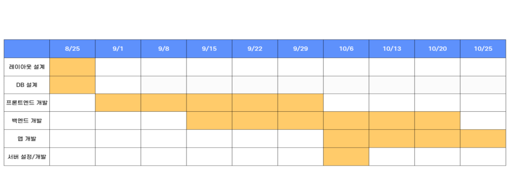

프로젝트 개요
프로젝트 주제
스택오버플로우같은 한국형 개발자 커뮤니티를 학교 내에서 멘토멘팅으로 만들자! 라는 아이디어가 이 프로젝트의 주제입니다.
개발 동기(프로젝트 선정 배경)
궁금한 점을 누군가에게 물어보기 힘들때가 있습니다.
그럴때 보통 구글링을 하거나 스택오버플로우에 찾아봅니다.
스택오버플로우는 영어로 소통하기 떄문에 익숙하지 않다면 번역기를 사용해야합니다.
그렇기 때문에 한국어로도 소통이 가능한 "우리끼리"가 필요하다고 생각하였습니다.
수행 목표
새로운 기술을 사용하며 익숙하지 않았던 기술들을 익숙하게 하는 것입니다.
팀 소개
사진
이름
김창환
송진섭
이준환
임재현
이메일
김창환 : imnews0772@daum.net
송진섭 : sjs335946@gmail.com
이준환 : wnsghks1026@naver.com
임재현 : ｋａｋａｒｏ１０２９＠ｎａｖｅｒ。ｃｏｍ
역할
디자인 : 김창환
프론트 : 임재현
백엔드 : 임재현, 이준환
모바일 : 송진섭
깃허브
김창환 : Takoyaa
송진섭 : sjs335946
이준환 : Shell-by
임재현 : reproduce0529
사용 기술
개발에 사용한 기술
HTML
CSS
JAVASCRIPT
PHP
MYSQL
개발에 소요된 물품 및 준비물
프로젝트 진행 과정(월별 진행상황)

우리끼리 - 함께하는 공부
[우리끼리 레이아웃]

현재까지 구현한 기능
- 채팅
- 랜덤 매칭
- 자유게시판
- 답변 및 채택
- 랭킹
구현하여야 할 기능
레이아웃 세부 설명
- 메인 페이지
- 글 작성으로 이동하기 위한 버튼
- 매칭으로 이동하기 위한 버튼
- 현재 진행중인 투표와 투표를 위한 버튼
- 가장 조회수가 높은 질문 들이 출력됨
- 오늘 하루동안 올라온 질문과 답변, 매칭 된 사람들 수가 출력 됨
- 글 작성 페이지
- 제목을 작성 할 수 있는 텍스트 박스
- 파일을 첨부 하기 위한 버튼
- 내용을 작성 할 수 있는 텍스트 박스
- 작성한 질문을 업로드 하기 위한 버튼
- 글 보기 페이지
- 원하는 내용을 찾기 위한 텍스트 박스
- 검색을 위한 버튼
- 질문 들이 출력됨
- 멘토 매칭을 위한 페이지
- 여러가지 언어 들중 원하는 언어를 선택 할 수 있음
- 선택한 언어를 알고 있는 사람을 매칭하기 위한 버튼
- 채팅 목록 페이지
- 최근에 대화를 나눈 대화방이 출력됨
- 랭킹 페이지
- 포인트를 기준으로 내림차순으로 정렬된 랭킹이 출력 됨
- 내 정보 페이지
- 다음 호칭까지 남은 포인트가 출력됨
- 내 순위를 보기 위한 버튼
- 내 질문을 보기 위한 버튼
- 내 답변을 보기 위한 버튼
데이터 베이스 / 데이터플로우/ 시스템구조
세부 수행 과정
- 회원가입 : 이메일과 아이디 등 회원 가입에 필요한 정보와 함께 자신 있는 언어를 선택하고 그 값은 백엔드에 저장 된다.
- 로그인 : 아이디와 비밀버호를 입력 받은 후 입력 받은 값과 동일한 값이 백엔드에 저장 되어 있는지 확인하고 있으면 로그인이 됨
- 글쓰기 : ...?
- 댓글 : ...?
- 채팅 : ...?
- 멘토 매칭 : 선택한 언어와 동일한 언어를 잘 다루는 사람중 한명이 랜덤으로 매칭됨
- 랭킹 : ...?
사용자 수행 흐름도
- 사이트에 접속하게 된다.
- 이미 계정이 있는 사용자는 로그인을 하게 되고 계정이 없는 사용자는 회원가입 후 로그인을 진행하게 된다.
- 메인 페이지에서 글 작성 페이지로 이동 할 수도 있고 멘토 매칭 페이지로 이동 할 수도 있다.
- 글 작성 페이지로 이동하게 된 경우 제목을 입력하고 파일을 첨부하고(선택) 내용을 작성한 후 글을 업로드 할 수 있다.
- 멘토 매칭 페이지로 이동 한 경우는 원하는 언어를 선택한 후 매칭 버튼을 누르게 되면 그 언어에 대해 잘 아는 사람이 매칭 되고 그 사람과 개인 채팅을 하며 궁금증을 해소하면 된다.
- 그 외에도 내 정보 페이지에 들어가 내 정보를 볼 수 있고 내가 작성했던 질문과 답변을 볼 수 있으며 현재 나의 랭킹도 알 수 있게 된다.
- 랭킹 페이지에서 랭킹은 포인트를 기준으로 내림차순으로 정렬한 순위가 출력된다.
결과 분석
- 우리끼리를 통해 부담 없이 모르는 것들을 쉽게 물어 볼 수 있는 분위기가 조성 되었음
- 평소 대화할 기회가 많이 없는 친구들과 친하게 지낼 수 있게 되었음
유지 보수
- 활성화를 위해 포인트를 사용하는 상점 제작
- 코드 리팩터링을 통해 효율적인 프로그램 개발
- 보안 관련 지식 습득 후 추가 개발
- 타 교과 분야에서 사용할 수 있도록 개발
깃허브 저장소 주소
실행 주소
앱 링크
프로젝트 소개 영상
계획 발표 자료
중간 발표 자료
최종 발표 자료